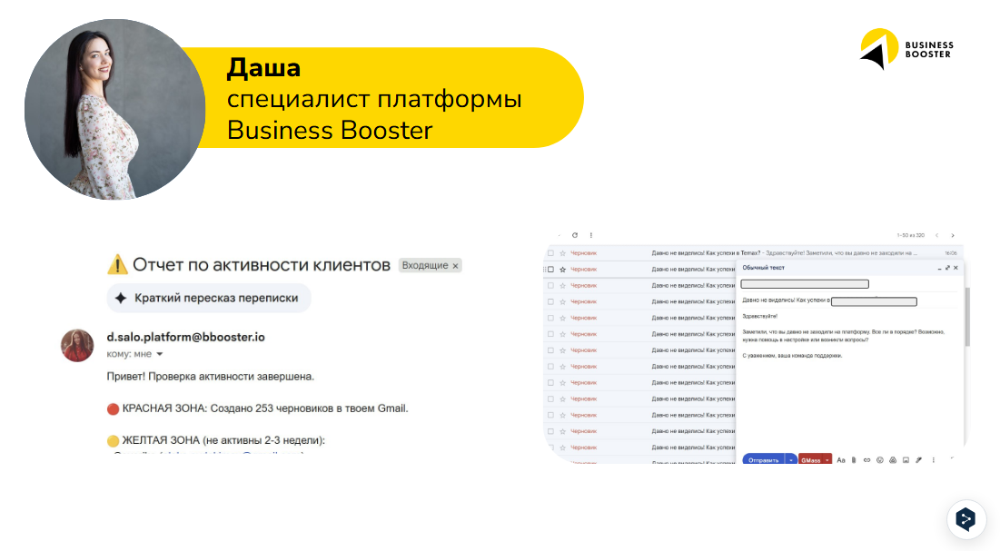

AI-подписки оплачиваются, но системы нет
Инструменты куплены, сотрудники что-то пробуют, но это не складывается в рабочий процесс, который можно измерять, повторять и масштабировать.
AI Booster за 10 недель через внедрение в вашу команду переводит ручные задачи и эксперименты в рабочие решения, которые экономят время, деньги и дают измеримый результат.
Хочу внедрить AI, но не понимаю, куда в первую очередь
Инструменты уже есть, но хочется выстроить систему
Конечная цель есть, но она размыта и не оцифрована
Проект держится на внешних подрядчиках, а внутри отвечаю я
Мы физически не успеваем обрабатывать весь массив запросов
Сотрудники не хотят брать ответственность и проявлять инициативу
Инструменты куплены, сотрудники что-то пробуют, но это не складывается в рабочий процесс, который можно измерять, повторять и масштабировать.
Отчеты, контроль, переписки, подготовка материалов и повторяющиеся задачи остаются в старом ручном режиме. AI есть, но нагрузка не уходит.
Владелец понимает, что внедрять AI нужно, но у него нет времени каждый день разбираться, где применять AI, кого подключать и как доводить решения до измеримого результата.
Business Booster развивался и рос как обучающая компания. Вместе с ростом накапливались ручные процессы: отчеты, контроль, подготовка материалов и управленческие проверки.
Чтобы не нанимать дополнительный штат под рутинные процессы, мы начали автоматизировать самые трудозатратные процессы. Это снимало часть ручной работы, но каждый запуск требовал участия IT-отдела, технического задания и обратной связи со специалистами.
Когда появились первые сильные AI-возможности, мы выделили отдельный отдел по AI-интеграциям и начали встраивать AI внутрь процессов Business Booster.
Мы оцифровали спикера и стали быстрее выпускать материалы для новых рынков без живой записи каждого урока. Спикер согласовывает тезисы, а производство контента становится масштабируемым процессом.
Команда трафика собрала систему, которая мониторит креативы конкурентов, отбирает рабочие сценарии и выдает новые идеи, адаптированные под Business Booster.
Все звонки и сделки проходят AI-контроль. Система видит повторяющиеся ошибки продавцов, подсвечивает слабые места в воронке и помогает руководителю управлять конверсией по данным, а не по ощущениям.
Мы упаковали программу Business Booster в собственную платформу: обучение, задания, сдачу решений, AI Alex, экзаменаторов, игру и аналитику прогресса. Так программа стала управляемой системой, где участники проходят путь внутри продукта, а команда видит результат и точки роста.
После внедрения AI в собственные процессы мы увидели новое узкое место: автоматизаций стало много, но часть решений все еще не были системными. Технологии выросли настолько, что мы приняли решение обучить автоматизации сотрудников, которые лучше всех знают свой процесс.
Кейсы сотрудников Business Booster с измеримым бизнесс-результатом




Мы начали передавать экспертизу AI-интеграторов сотрудникам: через практические сессии, воркшопы, хакатоны, поддержку, игру и понятную фиксацию эффекта для владельца.
Сотрудники приходят не за теорией, а с ручными процессами, которые уже забирают время.
Сложные места разбираются в реальном времени, чтобы решение дошло до рабочего состояния.
Игра, баллы и видимость лучших решений помогают поддержать интерес и снять сопротивление.
Мы взяли лучшие действия, которые сработали внутри Business Booster, и упаковали их в AI Booster: 10-недельный запуск AI-трансформации через обучение команды и практику внедрения в реальных бизнес-процессах компании.
Основа программы — 10 онлайн-мероприятий: воркшопы дают команде практику и кейсы, а хакатоны переводят задачи вашей компании в рабочие решения.
Определим, какие процессы компании стоит автоматизировать первыми для измеримого бизнес-результата.
Команда разберет кейсы, механику и логику внедрения AI в реальные процессы компании. Уже на первом воркшопе команда соберет первую оптимизацию и применит ее в работе.
Практический формат: вместе с экспертом команда работает с реальными задачами вашей компании и доводит решения до рабочего состояния.
Чат с экспертом помогает не останавливаться, когда сотрудник столкнулся с проблемами в доступах, данных, логике или настройке решения.
Участники получают баллы за внедрение автоматизаций и видят лучшие решения внутри команды.
Владелец видит, какие процессы автоматизированы, сколько часов и денег это экономит и что запускать следующим.
После прохождения программы у компании остаются рабочие решения, понятный эффект и следующий список процессов для автоматизации.
Настроенные решения под ваши регламенты, отчеты, данные и воронки продаж.
Сотрудники умеют оптимизировать свою работу без постоянного привлечения сторонних IT-специалистов.
Понятно, какие процессы автоматизированы, сколько часов и денег они экономят и где следующий потенциал.
Команда перестает бояться AI и начинает видеть в нем инструмент для реальной работы.
Мы помогаем выстроить инфраструктуру и защищенный контур, внутри которого остаются ваши данные, доступы, код и автоматизации. Даже если отдельные сотрудники покидают команду, собранные решения остаются активом компании, а не личным навыком одного человека.
Калькулятор показывает, во что ручная работа команды превращается в деньгах и какой эффект может дать AI-внедрение.
Нет. Программа построена так, чтобы обычные сотрудники могли находить ручные процессы, собирать первые решения и развивать их с поддержкой экспертов.
У вас будут рабочие решения на реальных процессах компании, понятный список следующих автоматизаций и измеримый эффект в часах, деньгах, скорости работы.
Мы начинаем не с давления, а с практики на их собственных задачах. Когда сотрудник видит, что AI снимает его ручную работу, сопротивление снижается, а включенность растет.
Команда приходит с выбранной задачей компании и вместе с экспертами собирает рабочее решение. Это не лекция и не домашнее задание, а практическая сессия с конкретным результатом.
Да. В программе выстраивается защищенный контур внутри компании: данные, доступы, код и автоматизации остаются у вас. Если сотрудник покидает команду, собранные решения остаются активом компании.
Основной ритм — одно онлайн-мероприятие в неделю. Воркшопы длятся около 2 часов, хакатоны — около 3 часов.
Диагностика помогает определить, какие процессы стоит автоматизировать первыми.